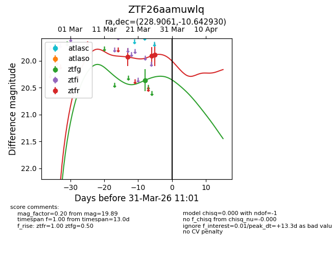
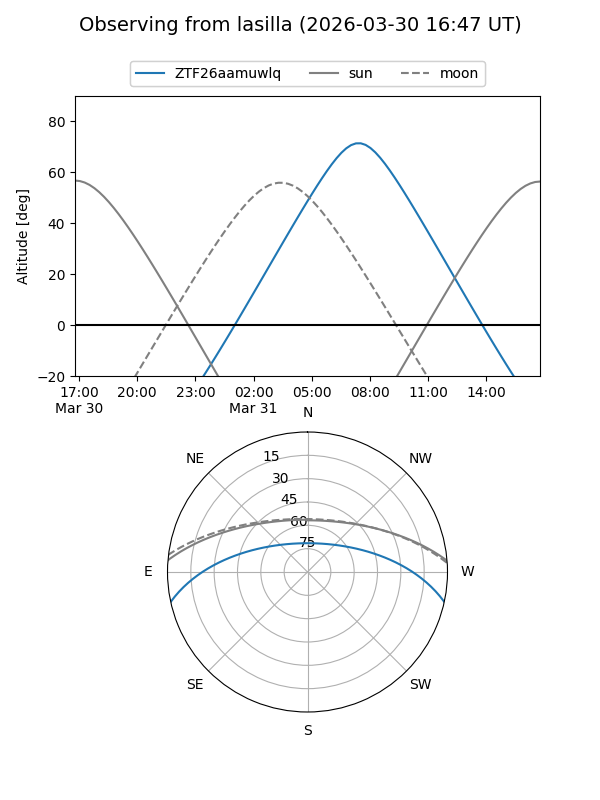
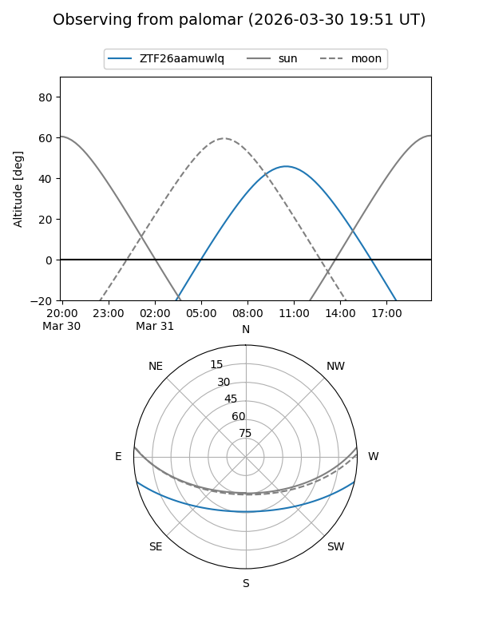
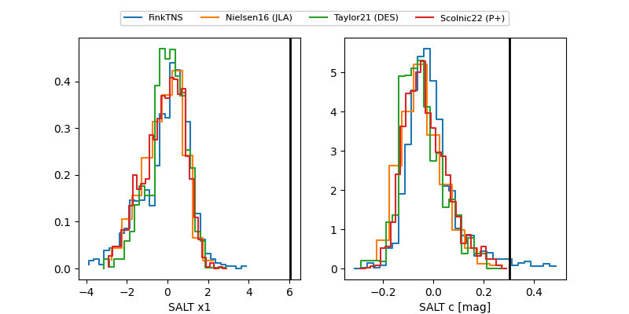

ZTF26aamuwlq
Target ZTF26aamuwlq at 2026-03-31 11:05
Aliases and brokers:
FINK: link
Lasair: link
ALeRCE: link
alt names
ZTF26aamuwlq (ztf,fink_ztf)
Coordinates:
equatorial (ra, dec) = 228.9061,-10.64293
equatorial (HMS+DMS) = 15:15:37.47,-10:38:34.55
galactic (l, b) = (350.6061,+38.53523)
Flags:
Photometry:
last ztfg=20.36, ztfr=19.89
1 ztfg, 3 ztfr detections
Lightcurve

Visibility


Additional plots
